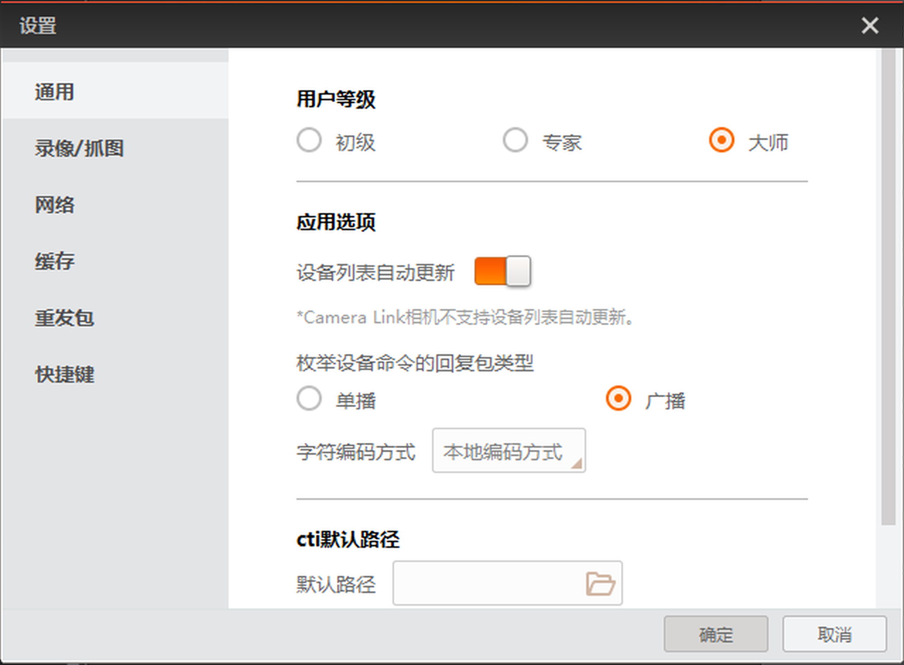

通用部分可根据用户需要切换用户等级，设置设备列表是否自动更新、字符串编码方式和cti文件默认路径。
- 用户等级
- 分为初级、专家、大师三种。选择不同的用户等级，相机属性树栏开放的可以读写的参数有所差别。其中初级为最低用户级别，只能查看部分相机参数；而大师为最高用户级别，可以查看所有的相机参数。
- 应用选项
-
- 设备列表自动更新
-
启用设备列表自动更新，则每隔固定的时间，设备列表将对GigE和USB接口的在线设备执行自动刷新并显示的操作；若不勾选，则需要手动刷新才能使GigE和USB接口的在线设备进行刷新并显示。
- 枚举设备命令的回复包类型
-
枚举网口设备时，可对设备数据包的回复类型进行配置。
- 单播
- 枚举的设备仅给当前使用的主机回复数据包。
- 广播
- 设备给与主机所在同一网段的所有主机回复数据包。
- 字符编码方式
- 可以对客户端的字符串编码方式进行设置，可选本地编码方式和UTF-8。
- 本地编码方式
- 支持中文字符。
- UTF-8
- 支持中英文字符互译。
- cti默认路径
- 可以设置使用GenTL标准搜索相机时加载的cti文件的默认路径。启用开启默认路径后，客户端将自动加载默认路径下的cti文件。
说明：
使用GenTL标准连接相机的具体操作方法请见GenTL管理章节。

图 1 通用设置
 进行手动刷新。
进行手动刷新。